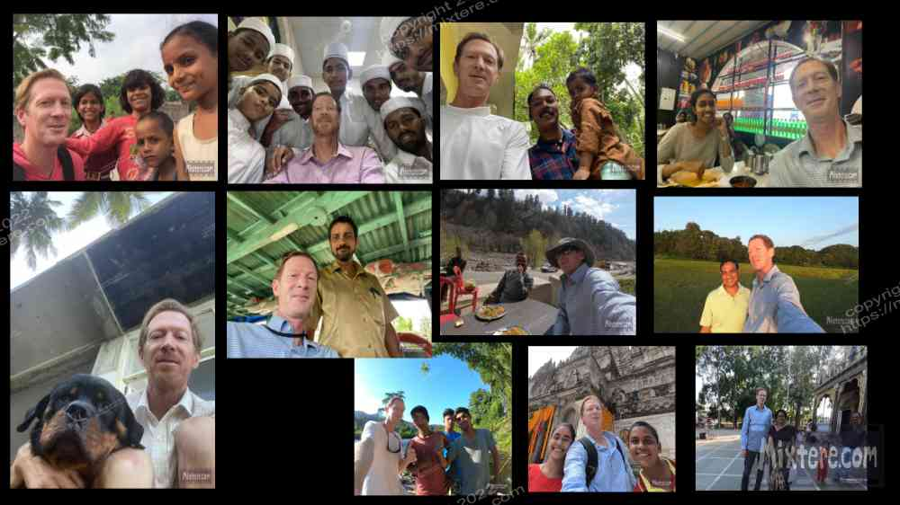
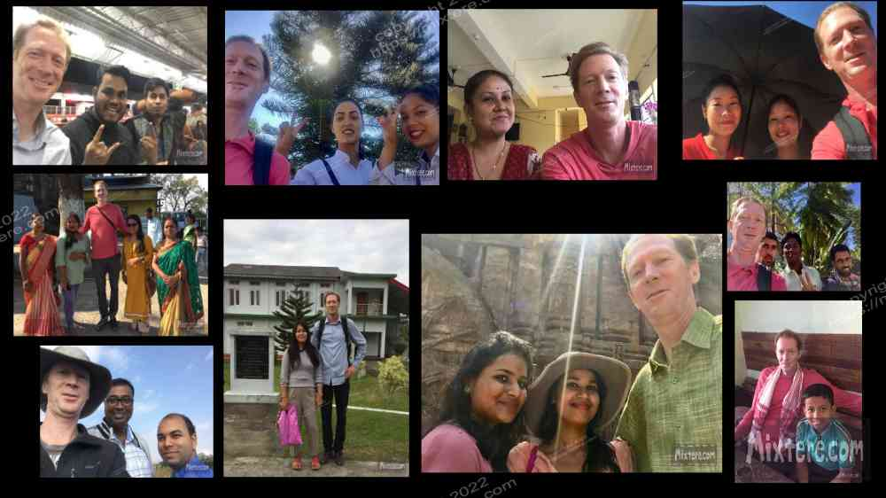
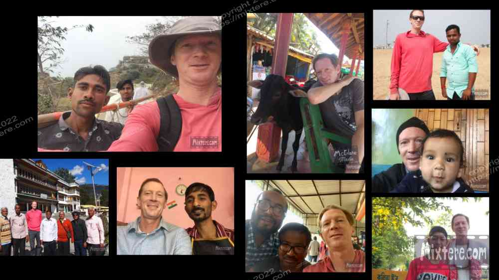

Before I refer to selfies, as I alluded to earlier, I began to compile this story about four years ago. I’m going to interject here with some updated content just a bit. I experienced a profound and instant transformation traveling from my home country to rural Bihar. Many facets of this transformation had to do with going from working class person to rich person overnight simply due to the conversion rate of the dollar. I don't claim to have an understanding of the poverty and deprivation that some of the living beings around me experienced every day and had not known anything other than. For me and for many people traveling India, what is experienced is an effort to survive an onslaught of sensory overload. This is felt in the heart as well as the mind. The delights and horrors and challenges are just overwhelming. I coped with a variation of dissociation in order to deal with it. Along with transporting oneself can come a sudden onslaught of extreme poverty, extreme lack of what in my country are simple privileges of basic education, healthcare, running water, more than one item of clothing to wear, enough food to last one more than one day, enough fuel to cook, having potable water or even a place to bathe and of course, a place to sleep. Eventually, in witnessing all this, the body just turns off from taking in anything new and survival mode kicks in. I would add that as an American, now suddenly absent is a sense of basic rights available to you. Although I am experienced, traveling, and learning about India seems to be a never-ending volley of new lessons and new discoveries. Some of them are disturbing. If you add to that the lack of my ability to speak or read local languages in India, understand the complexities of the caste system, gender roles or religious hierarchy, you get an idea of just how blind I still am.
So one learns to steal oneself against what one is confronted with. There is no way to feed every hungry person to help every hurt person or animal encountered. In some instances it’s best not to become involved in trying to fix or alleviate the problems before oneself. What is is, and is not "a problem to be fixed." India is the second most populous country in the world and although there is unimaginable wealth among some individuals, there is poverty and deprivation that is simply incomprehensible. So it would be extremely insensitive for me to proceed in my story here without acknowledging that in my experience these issues are at the forefront of my very human existence as a traveler in India. If you happen to be one of those people compelled to try to help others as I am it becomes necessary to steal or numb oneself from the sheer volume of suffering and need before you. Additionally it is often a mistake to give money.
Instead, what I have done is acquire groceries or food to help out. But doing this in small batches means enriching the store owners, as you are often paying foreigner prices, instead of the people you are donating to. And it often doesn’t bring the sense of satisfaction or fulfillment that you might think. With this huge economic discrepancy between the most bootstrapped budget traveler and many of the Indians surrounding them it’s incredibly humbling to be welcomed by the whole spectrum of peoples encountered. My best guess is that many of them have never had anything close to the privileges that I have had. Yet, despite this, I was often met with a welcoming spirit, a positive attitude and generous tolerance for my ignorance. I would venture to say I do not think that in most places in the United States these behaviors would be forthcoming.
I know that from the traveler's perspective, being exposed to so much in India can be both liberating as well as stressful. It must be quite maddening for the Indians hosting these interlopers; as it was for me coping with tourist take-over in Laguna. I have much gratitude for these folk tolerating me bumbling about in the East. Being able to travel internationally is a privilege that at times is forgotten due to the rigors of the road. Hopefully this weary traveler can be forgiven for this, stumbling with attempts to straddle cultures, combined with a case of heat stroke or the trotskies. Some of these can be found in the following images of the journey.These may be better representations of an experience inexpressible by the limits of language.

The selfie is a pivotal thing in modern day India, as I guess it is in most places these days. I was never one to get into selfie culture yet I learned quite a lot about it on my travels in India. For whatever reason, seeing and talking with a foreign traveler is often seen as quite an occasion to be documented. But selfies here are a slippery slope. Sometimes people act very polite; sometimes they don’t and just cram their phones into one’s face without asking any sort of permission. Either way, there is little point in trying to refuse the selfie, at least the first few. Then, after a few clicks, it is often a good idea to make yourself scarce. Once someone stops you and asks to photograph, it encourages others around to do the same. It can snowball into quite a hassle and have the effect of making the foreigner feel like an animal in the zoo.
Some time has passed since these photos were snapped. Something became apparent to me while I put these images together and that thing is this. Most of the selfie moments have occurred when I was off the tourist trail. It makes sense that people are more excited (or revolted) to meet a foreigner in such places. Now, I am compiling this page from the tourist area of Kovalam Beach, a place where tourists are as common as sand on one’s feet and touts for Ayurvedic massage. In places like this, most people approach the foreigner for a business deal if they approach at all. This often eliminates the delightful cultural exchange that can take place along with the selfie. Anyways, these selfie sessions have resulted in some interesting and often awkward moments; not all photogenic but moments none-the-less. You will notice the lack of variety in my wardrobe and tea-stained teeth; things that for me are part of living out of a backpack.

Right-click below to open in new tab

Click below for next chapter